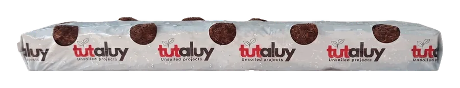
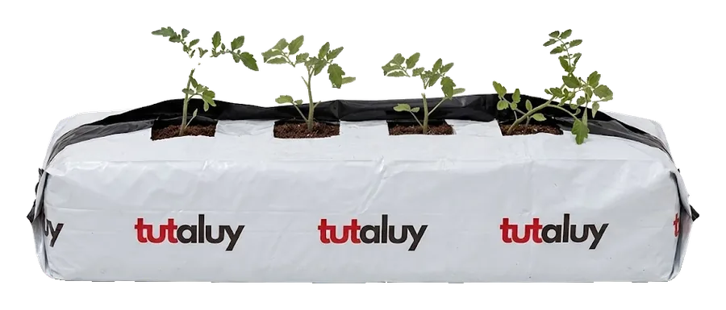
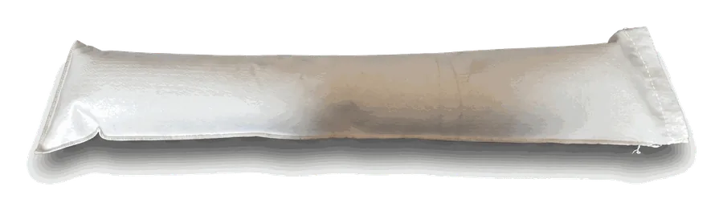

Growing media
Coco coir and perlite grow bags. Washed, buffered, with a known EC before planting.
Coco coir.
Aged, washed coconut fibre. An organic substrate that holds water and air at the same time, so it forgives irrigation mistakes. Our choice for strawberries and tomatoes.
- Water and air buffer throughout the root zone, also between irrigations.
- Pre-buffered with calcium, with a known EC and pH before planting.
- For strawberries, a fresh bag every season: arrives sterilised and disease-free, carrying nothing over from last year.
- For vegetables, up to three years in the same bag: the structure holds for long seasons and reuse.
- Organic and compostable at end of life.

Strawberry coco bag
Ready to plant, with an opening for the drip line.
11 planting holes

Vegetable coco bag
4 or 5 planting holes18 / 23 / 27 L
Dutch Plantin representatives in Israel: aged coco bags, made to order and shipped straight from the factory.
Perlite.
Expanded volcanic glass. A mineral substrate, sterile and inert: what you put in the feed is what the root gets. For vegetables on frequent drip.
- Full control of nutrition: no ion exchange, easy to flush and change the recipe.
- High aeration and drainage, roots don't suffocate even under dense irrigation.
- Stable and sterile: doesn't break down, neutral pH, can be disinfected and reused.
- Small water buffer, so it needs frequent irrigation and close control.

Perlite bag
Heavy geotextile fabric with UV filter, for vegetables.
Several volumes
Fertigation.
In a soilless substrate the root volume is small, and every irrigation mistake shows within hours.
- Fertigation unit with controller, injection pumps, EC and pH, filters and flow meters, calibrated on site.
- Pressure-compensated drip with stakes and micro-tube to every bag.
- Drain measurement per block, connected to the controller and to NITUR.